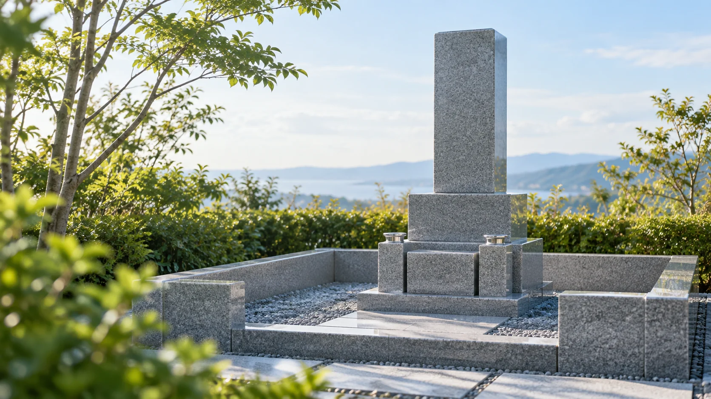
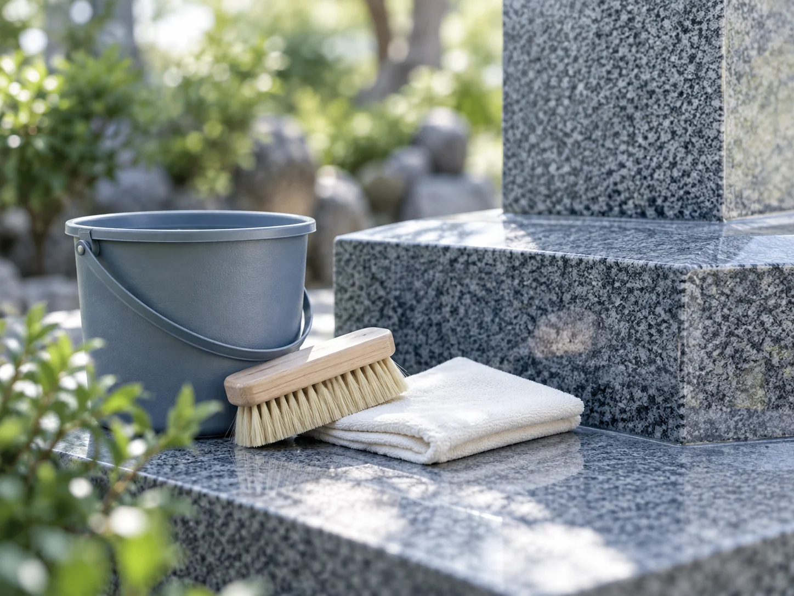

墓石の水洗い・拭き上げ
墓石の表面を水洗いし、拭き上げる清掃をご案内しています。
なかなか帰省できないご家族へ。お墓の清掃から作業前後の写真報告まで、相談したいことがひと目でわかるご案内です。

墓石の表面を水洗いし、拭き上げる清掃をご案内しています。
お参りで使う花立てや線香立ての清掃も対象です。
お墓まわりの草むしりについてもご相談いただけます。

清掃の前と後の写真を、LINEまたはメールでお届けする流れです。遠方からでもお墓の様子を確認できます。
墓地名・所在地、区画の目印、気になる汚れや草の状態、希望時期をご用意ください。墓地の入場や作業のルールも、事前の確認に役立ちます。
対応地域の掲載情報：石川・富山・福井
この見本では、相談案内の開閉だけを体験できます。個人情報の入力・送信や電話発信はありません。
2025年10月の本人広告をもとに構成しています。現在の受付状況・作業条件は未確認です。